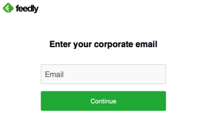

Send an email to Feedly and request that they enable SAML 2.0 for your account.
Copy the following Metadata into the email message.
Sign into the Okta Admin dashboard to generate this value.
Done!
Note: Feedly supports SP-iniated flows, IdP-initiated flows, and Just In Time (JIT) provisioning.
To test an SP-initiated flow, use the following procedure.
Enter an email adress and click Continue, as shown below.
